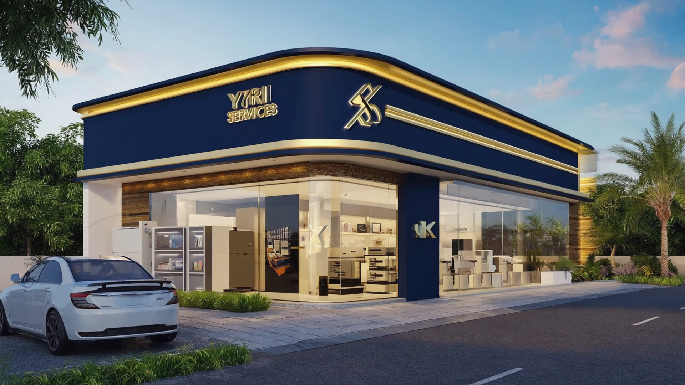

Les témoignages suivants reflètent la confiance que nous accordent nos clients à Korhogo et dans la région. Qu'il s'agisse de confection, d'impression, de fourniture de matériel bureau, de travaux BTP ou d'acquisition de terrain, nous mettons tout en œuvre pour assurer leur satisfaction.
« Nous avons confié à Yiri Services la confection des uniformes scolaires de notre établissement. Les tenues sont solides, bien finies et adaptées aux enfants. Les parents ont beaucoup apprécié la qualité et le prix. La livraison a été faite dans les délais, et l'équipe a été très disponible pour les ajustements nécessaires. Nous comptons renouveler notre collaboration pour les prochaines années. »
« Pour le lancement de ma boutique, j'avais besoin d'une belle bâche, de cartes de visite et de quelques supports de communication. Yiri Services a su me conseiller sur les dimensions, les couleurs et la qualité de la bâche. Le rendu est très professionnel, les clients trouvent facilement mon commerce. Les cartes de visite sont élégantes et reflètent bien l'image de mon entreprise. »
« Sur nos chantiers, nous avions besoin de gilets de chantier et de combinaisons de travail pour tout le personnel. Yiri Services nous a fourni des équipements confortables et résistants, avec notre logo bien visible. Les délais ont été respectés malgré la quantité importante. Aujourd'hui, nos équipes sont mieux protégées et notre image de marque est renforcée sur les chantiers. »
« Dans notre structure de santé, nous cherchions des blouses médicales de bonne qualité à un prix raisonnable. Yiri Services a répondu présent avec des blouses faciles à entretenir, adaptées au climat de Korhogo. Le marquage avec le logo de la clinique et nos prénoms a été très apprécié par toute l'équipe. Nous recommandons leurs services à d'autres structures médicales. »
« Je voulais investir dans un terrain à Korhogo mais j'avais peur des problèmes de papiers. Yiri Services m'a accompagné dans la recherche d'un terrain bien situé et m'a aidé à vérifier les documents. Le processus d'achat s'est déroulé sans stress. Aujourd'hui, je suis propriétaire d'un terrain sur lequel je prévois construire ma maison. »

Contactez Yiri Services Korhogo dès aujourd'hui pour votre projet.
Nous Contacter